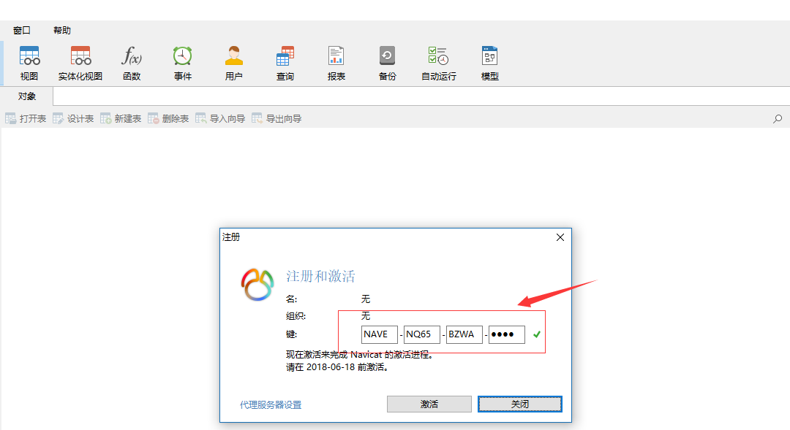

Navicat Premium 12下载安装
下载地址：https://www.navicat.com.cn/download/navicat-premium
破解工具下载
下载地址：https://github.com/DoubleLabyrinth/navicat-keygen/releases
解压后，cmd命令行进入工具目录，执行命令
1 | > navicat-patcher "D:\Program Files\PremiumSoft\Navicat Premium 12" RegPrivateKey.pem |
注：命令的参数是Navicat Premium 12的安装目录。若为powershell请在命令最前面加.\
然后执行命令
1 | > navicat-keygen.exe RegPrivateKey.pem |
输入了Your organization项后回车后暂时停止输入，打开安装好的Navicat Premium 12，然后断开所有网络连接，点击帮助 > 注册，然后将工具生成的密钥SnKey的值输入注册弹窗的键那一项，再点激活。

然后弹窗再点击手动激活
再将手动激活弹窗的请求码输入工具运行待输入项的位置
最后将工具生成的注册码输入手动激活弹窗的激活码一栏，点击激活即可完成破解了。
友情提示：navicat-keygen 激活需要适配Navicat Premium的版本，不同的版本无法激活。激活后也不要升级更新，升级更新后将不再是激活状态，需要重新激活。新版本激活需要等到破解工具作者出了新的破解工具才能激活。